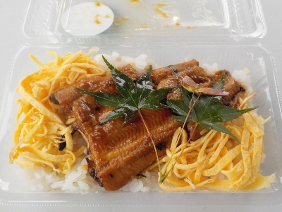

大田名物アナゴのお寿司を食べました。
更新日 : 2026/09/27

一度お店に食べに行きたいと思っていましたが、ごいせ仁摩のイベントで販売していたので簡単に買えて食べれて良かったです。
でも実際にお店に行きたかったかな。
アナゴはタレにしっかりと浸かっていて濃い味でした。アナゴらしい味と食感のお寿司でした。
1000円で購入しました。大田名物が食べれて良かった。
島根県大田市三瓶町志学ロ1730-11
更新日 : 2026/09/27

一度お店に食べに行きたいと思っていましたが、ごいせ仁摩のイベントで販売していたので簡単に買えて食べれて良かったです。
でも実際にお店に行きたかったかな。
アナゴはタレにしっかりと浸かっていて濃い味でした。アナゴらしい味と食感のお寿司でした。
1000円で購入しました。大田名物が食べれて良かった。